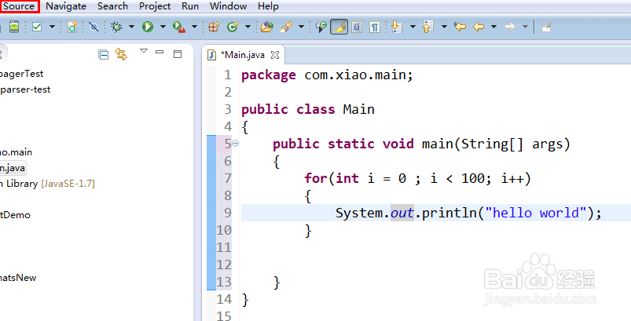
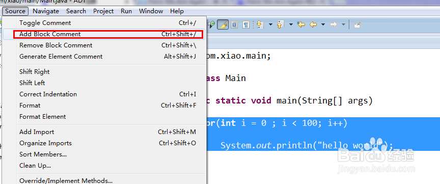
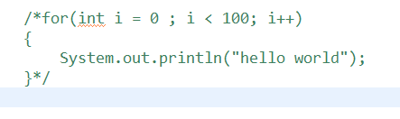
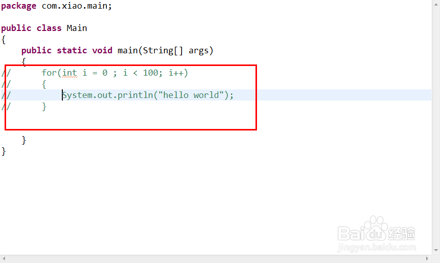
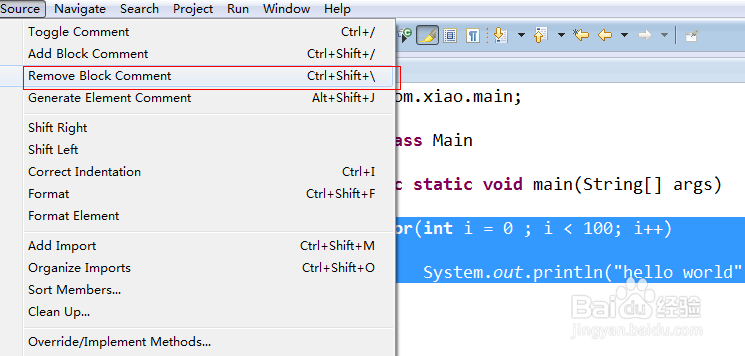

Eclipse中注释方法操作（两种）
- |
- 浏览：7639
- |
- 更新：
- |
- 标签：eclipse
百度经验:jingyan.baidu.com
Eclipse 中的两种注释方法：(1)多行注释
/*
*/
（2）单行注释
//
多行注释操作方法。
选中注释部分-菜单栏右上角 source；
Add block comment。必须选中需要注释的部分才可以。
也可以利用快捷键 ctrl + shift + /
第二种方法就是 选中注释的行，ctrl + shfit + c；
取消注释的方法：对于ctrl + shift + / ， 可以ctrl + shift + \,
如果是ctrl + shfit + c，则只需要在选中 ctrl + shfit + c
经验内容仅供参考，如果您需解决具体问题(尤其法律、医学等领域)，建议您详细咨询相关领域专业人士。
举报作者声明：本篇经验系本人依照真实经历原创，未经许可，谢绝转载。


![]()